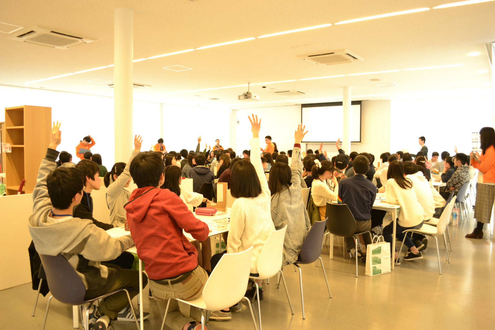

このホームページ、及び新歓企画を運営しているのは
名古屋大学生協学生委員会という団体です。学生委員会の新歓企画と活動について紹介します。
SC新歓企画
※「SC」とはStudent Committeeの略で、学生委員会の別名です。
１.教科書販売等ガイダンス新入生スタッフ
学生委員会に興味を持ったら、まずはこの企画へ！
通常、新入生は参加側である教科書販売等ガイダンスに運営側として携わることができる企画です！
(もちろん自身のガイダンス時間中は受けていただけます。)
新入生全員が参加するガイダンスの運営に関わることができる、貴重な機会です。
是非お気軽にご応募ください。
・日時：4月2日(火)
２.OPEN SCR
一足先にSCR(学生委員会室)で世間話でもしましょう。
学生委員会の先輩と仲良くなるチャンス！履修やTOEFLなどの相談にも乗ります！
・日時：4月3日(水)
３.SC説明会
学生委員会のことを全く知らない方へ、私たちのことを紹介します！
ふらっと参加してみてはいかがでしょうか？
・日時：4月11日(木)、12日(金)、16日(火)、17日(水)
４.SC活動体験会
学生委員会の活動を体験しちゃおう！個性豊かな学生委員メンバーも必見です！
・日時：4月13日(土)、20日(土)
●参加希望の方は以下のメールアドレスへ
SC新勧担当 recruit@sc.coop.nagoya-u.ac.jp
学生委員会の活動紹介
名大生協学生委員会は、名大生協の組織委員会として、組合員(≒大学生の皆さん)がよりよい大学生活をおくれるように、
おもに5つの活動を行っています。そのどれもが、規模が大きく、やりがいをもって活動できることは間違いありません。
総代活動
学生委員会と、生協職員、そして総代と呼ばれる名大生が協力して、購買や書籍店舗などの名大生協を、もっと名大生が利用しやすくしようという活動です。
総代さんにやりがいを感じてもらうべく、総代さんが意見を出しやすい環境を作り、その意見を実現させるために活動しています！
具体的に、購買、書籍、防災、環境、TFT、の5つの班に分かれ、フェアの企画や店舗の装飾、学内に向けての生協の広報を行う
SS・生活班活動と、月に1度、生協の職員や他の総代さんと交流し、企画に対しての意見を出し合う総代meetingを行っています。

▲総代meetingの様子
オープンキャンパス
皆さんは名大のオープンキャンパスに来たことはありますか？ 私達、学生委員会は学生企画として、
対談・ツアー・道案内・クイズラリーの4つの大きな企画を運営しています。
フレッシュな高校生と交流できる絶好の機会であり、高校生・保護者・スタッフ(名大生)にとって
最高に満足して頂けるように活動しています！
どうしたら来場者にとって良い運営ができるのか、どのように広報すれば良いかなどを考えて企画をします。
Me～dia
Me～diaとは、学生委員会が発行する機関誌です。記事内容の発案からレイアウト構成、作成まで行います。
ほぼ全員が初めての記事作成なので戸惑うこともありますが、記事を書いているうちに作成技術は向上し、
作成の面白さ、楽しさを実感します。
毎号800部近く発刊されるため、あなたの伝えたい思い・情報を多くの名大生に読んでもらうことができます。
また、記事を作成するために普段使わないソフトウェアを使うことができるのも魅力的です！

▲Me～diaの表紙
共済
大学生協の学生総合共済には生命共済があり、 さらにあわせておすすめする二つの保険、学生賠償責任保険（一人暮らし特約あり）と就学費用保障保険があります。
これらは大学生の病気やケガ、賠償事故や住まいのリスク、扶養者のもしもなどに対応できるようになっています。
名古屋大学の組合員は、他大学に比べ、多くの人がこの共済と保険に加入しています。
そこで、この制度についてもっと知り、積極的に利用してほしい、ひいては大学生活を健康に過ごしてほしい――
そんな思いで、共済や給付の認知度アップの活動や自転車点検などを行っています。 やりがいがあり、充実させるべき活動でもあります。

▲共済のマスコットキャラクター
「タヌロー」
新入生歓迎活動
私たち学生委員会は新入生が不安なく大学生活をスタートできるようにという思いのもと、新入生歓迎企画（NUmber Zero・meNUet）・
第二外国語紹介企画・教科書販売等ガイダンスの運営や、新入生歓迎冊子の作成等多くの活動を行っています。
秋ごろから始まり、生協の職員さんとも協力して行われる大きなプロジェクトなのでやりがいはもちろんのこと、
ここでしかできない、貴重な経験を得ることができます。

▲昨年の新入生歓迎企画の様子